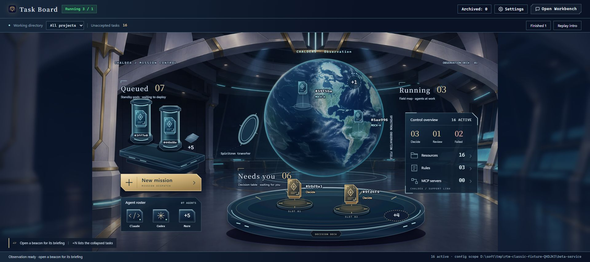
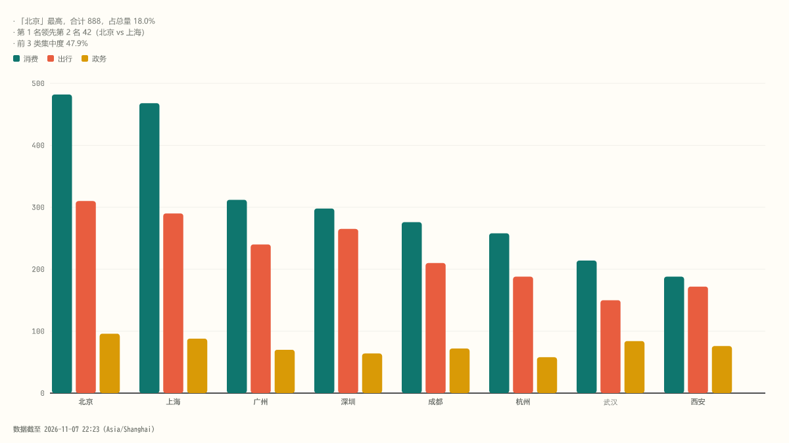

INDEPENDENT TOOLS · 2026
不拯救世界的时候，做点好用的工具。
让 Agent 坐到一桌，让数据说得清楚。迦勒底零时工 / CHALDEA TEMP

让编码 Agent，坐到同一张圆桌。

让数据，成为清晰的表达。
THE PERSON BEHIND THE TOOLS
这是我的个人工具档案。比起宏大的许诺，我更喜欢把眼前的麻烦，做成一件能反复使用的小工具。
RTM 关注 Agent 之间的协作，Virta 关注数据与人的理解。一个把工作串起来，一个把结果讲清楚。
GitHub / ChaldeaTemp ↗